2. Setting up a development environment
2.1. Python 3.8.1
The examples in this document have been tested with the Python 3.8.1 interpreter available at the URL |https://www.python.org/downloads/| (Feb 2020) on a Windows 10 machine:

Installing Python creates the file directory [1] and the menu [2] in the list of programs:

- [3-4]: two interactive Python interpreters;
- [5]: Python documentation;
- [6]: Python module documentation;
We will not be using the interactive Python interpreter. It is simply important to know that the scripts in this document could be run using this interpreter. While it is useful for testing how a Python feature works, it is not very practical for scripts that need to be reused. Here is an example using option [4] above:
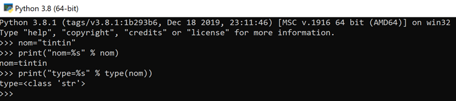
The >>> prompt allows you to enter a Python statement that is executed immediately. The code typed above has the following meaning:
Lines:
- 1: Initialization of a variable. In Python, you do not declare the type of variables. They automatically take on the type of the value assigned to them. This type may change over time;
- 2: display of the name. 'name=%s' is a display format where %s is a formal parameter denoting a string. name is the actual parameter that will be displayed in place of %s;
- 3: the result of the display;
- 4: display of the type of the variable name;
- 5: The variable name is of type class here. In Python 2.7, it would have the value <type 'str'>;
Now, let’s open a Windows console:

The fact that we were able to type [python] in [1] and that the executable [python.exe] was found shows that it is in the Windows machine’s PATH. This is important because it means that Python development tools will be able to find the Python interpreter. We can verify this as follows:
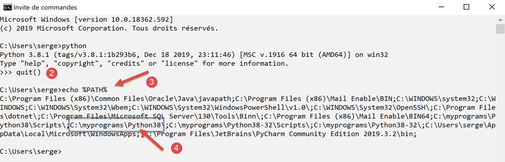
- in [2], we exit the Python interpreter;
- in [3], the command that displays the PATH for executables on the Windows machine;
- in [4], we see that the Python 3.8 interpreter folder is part of the PATH;
2.2. The PyCharm Community IDE
2.2.1. Introduction
To build and run the scripts in this document, we used the [PyCharm] Community Edition editor, available (Feb 2020) at the URL |https://www.jetbrains.com/fr-fr/pycharm/download/#section=windows|:
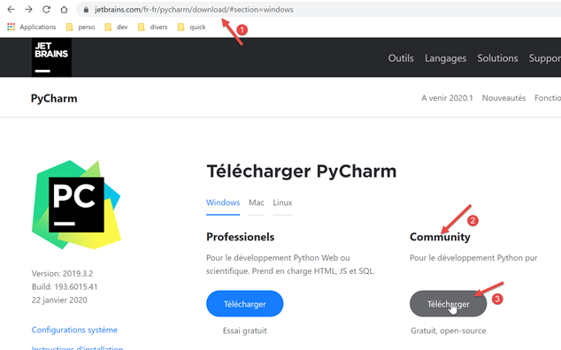
Download the PyCharm Community IDE [1-3] and install it.
Launch the PyCharm IDE and create your first Python project:


- In [2-4], create a new project;
The PyCharm IDE displays the created project as follows:

- In [2-3], let’s examine the IDE’s properties;

- in [4], the Python interpreter that will be used for the project;
- in [5], a drop-down list of available interpreters;
- In [6], select the interpreter downloaded in the |Python 3.8.1| section;

- in [7], the selected interpreter;
- in [8], the list of packages available with this interpreter. Packages contain modules that Python scripts can use. There are hundreds of modules available;
Let’s start by creating a folder where we’ll put our first Python script:

- Right-click on the project, then [1-2] to create a folder;
- In [3], type the folder name: it will be created in the project folder;
Next, let’s create a Python script:

- Right-click on the [bases] folder, then [1-3];
- In [4-5], enter the script name;
Let’s write our first script:

- In [3], we write the following script:
- lines 1, 3: comments begin with the # symbol;
- line 2: initialization of a variable. Python does not declare the type of its variables;
- line 4: screen output. The syntax used here is [format % data] with:
- format: name=%s where %s denotes the placeholder for a string. This string will be found in the [data] part of the expression;
- data: the value of the variable [name] will replace the %s placeholder in the format string;
- With [4-5], we reformat the code according to the recommendations of the Python governing body;
The script is executed by right-clicking on the code [6]:

- in [7], the executed command;
- in [8], the result of the execution;
To run the script in the document, download the code from the URL |https://tahe.developpez.com/tutoriels-cours/python-flask-2020/documents/python-flask-2020.rar| and then proceed as follows in PyCharm:

- in [1-2], open an existing project: select the folder containing the downloaded code;
- in [3], the project is open;
- in [4-5], run one of the project’s scripts;

- in [7-8], the results of the execution;
2.2.2. Virtual Execution Environment
Our work environment is now up and running. However, we will modify it to write the scripts for this course. First, let’s change the PyCharm configuration:

In the right-hand window:
- By default, box [1] is checked. Uncheck it so that PyCharm does not open the last project by default but lets us choose which one to open;
- In [2], we do not confirm exiting PyCharm when closing the application window;
- At [3], new projects open in a separate window;
- at [4], if you close PyCharm while a program is running, it will be stopped;
Now let’s close PyCharm and then reopen it:

- In [1], create a new project;
- In [2], specify the project folder;
- In [3], select a virtual environment. A virtual environment is specific to the project you are creating. It does not mix with the virtual environments of other projects. A Python/Flask project uses many external libraries that must be installed. Project P1 may use library B in version v1, and project P2 may use the same library B but in version v2. These two versions may be more or less compatible. However, when you install a library in version v2 and version v1 is already installed, version v1 is overwritten by version v2. This can be problematic for the project that was using version v1 if the new version v2 is not fully compatible with version v1. To avoid these issues, each project is isolated in a virtual environment;
- in [4], specify the folder where the Python libraries downloaded during the project will be stored. Here, we have chosen a [venv] (virtual environment) folder inside the project folder. There is no requirement to do this;
- in [5], the project’s Python interpreter. This is the one we installed in the previous step;
- in [6], create the project;

- in [7-8], the created project;
- in [9], the project's runtime environment, called a virtual environment;
- in [10], the [site-packages] folder is where libraries downloaded later will be stored;
2.2.3. Git
Next, we activate a version control system. Here, we’ll use Git [1-4]:

A version control system (VCS) allows you to track changes to a project. You can take snapshots, through an operation called a commit, of the project at different points in its lifecycle. If you make two commits at times T and T+1, the VCS lets you see what has changed between the two committed versions . Normally, the VCS is used by a team of developers. They commit their code once it has been thoroughly tested. From the VCS, other developers can retrieve this validated code and use it.
Here, there is only one developer. Experience shows that an application may work at time T but no longer work at time T+1. In that case, we would like to go back to time T to start over from scratch. The VCS allows for this, and that is why we will use it here.
We’ll show you how to do this with Git.
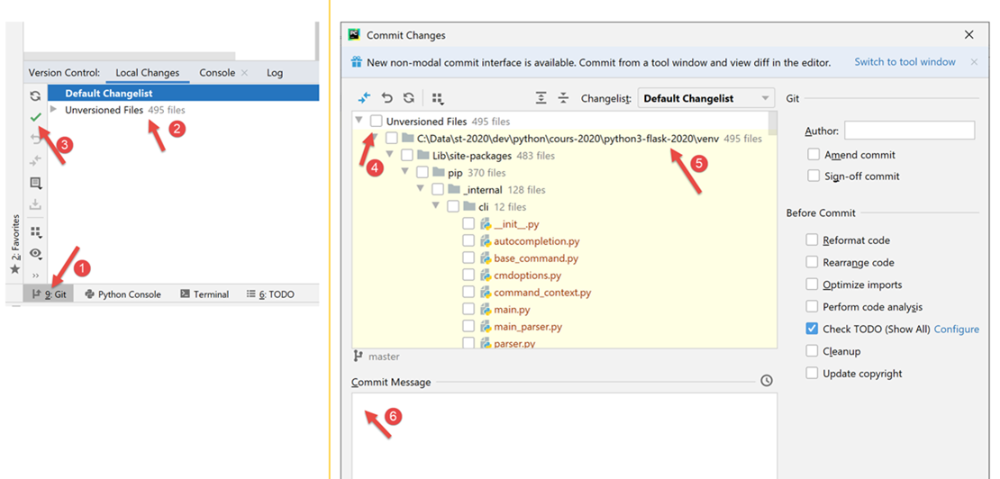
- In [1], select the [Git] tab (bottom left);
- in [2], you can see that there are 495 project files that are not versioned by Git. This means they will not be included in the project snapshot during commits;
- in [3], the [commit] button or project validation button. As mentioned, Git then takes a snapshot of the project and stores it in a [.git] folder at the project root (not displayed by PyCharm but visible in Windows Explorer);
Let’s commit [3] the project in its current state.
- In [4], the list of unversioned files;
- in [5], all of these unversioned files belong to the virtual environment [venv];
- In [6], every commit must be accompanied by a message. Here, the developer describes the changes introduced by the version to be committed compared to the last committed version;
Certain folders or files can be ignored by Git. They are then never included in the snapshot. In [5] above, right-click on the [venv] folder.
- In [1-3], we specify that the [venv] folder should not be included in Git’s snapshots. The list of folders and files ignored by Git is stored in a file called [.gitignore] [4];

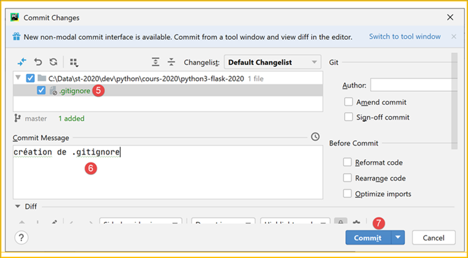
- After the previous step, all files in the [venv] folder disappear from the list of unversioned files. Only the [.gitignore] file that was just created remains;
- In [5], we select it so that it is saved;
- In [6], we create a commit message:
- in [7], we confirm. A snapshot of the project is then taken;

- in [8-9], the contents of the [.gitignore] file: a single line with the name of the [/venv] folder, indicating that its contents should be ignored in the snapshots;
Now let’s see how Git can be useful. First, we create a [git] folder (you can use any other name—it can be deleted at the end of the demonstration):

- in [1-5], we create a [git] folder;

- in [6-10], we create a Python script [git_01];

- in [11-12], the script contains only a comment;
- In [13-14], create a copy of [git_01]. To do this, select [git_01], press Ctrl-C (Copy), then Ctrl-V (Paste), and enter [git_02] as the filename;

Now, let’s commit our project. A snapshot will be taken of the two files [git_01, git_02];

- In [1-3], commit the project;
- In [4], select the unversioned files you want to commit—in this case, all of them;
- In [5], enter the commit message;
- In [6], we confirm;
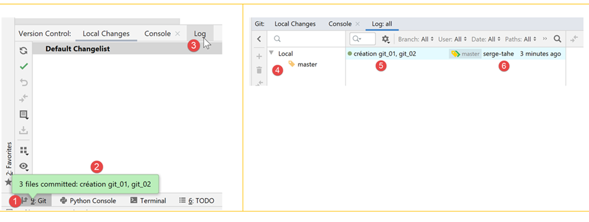
- in [1-2], confirm the commit;
- in [3], select the [Log] tab;
- In [4], a view of the project branches. Here, there is only one branch called [master];
- in [5-6], the commit that has just been made;
Now let’s create a script [git_03] in the same way:

Modify the [git_02] script and delete the [git_01] script:

Then commit the new version:
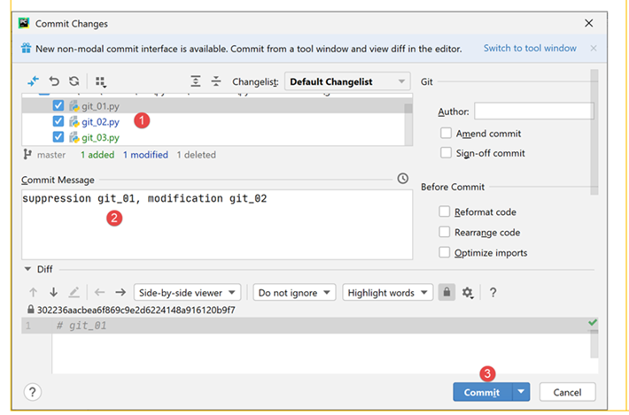
Now we have two commits in the logs:

When you select a specific commit, the project’s file tree appears to its right:

Now suppose that the last commit has led us to a dead end and we want to revert to a state corresponding to one of the previous commits:

- In [1-2], select the commit to which you want to revert;
- in [3-5], there are several reset modes. We choose the [hard] mode, which reverts to the selected state while discarding the changes made since then;

- in [6], we have recovered [git_01], which had been deleted;
- in [7-8], we find [git_02] in its original state without the modification that had been made;
Now, let’s modify [git_02] and add [git_03] [1-4]:

Now, let’s repeat the process of reverting to the initial commit:

- in [1-4], we return to the snapshot of commit #1;
- In [5-6], we choose the [Keep] option instead of [Hard]. These options aren’t easy to understand. So we need to try them out:
 | 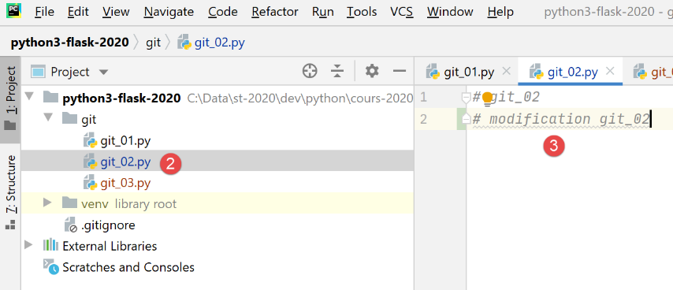 |
- in [1], the file [git_03] is still there;
- in [2-3], the [git_02] file has retained its changes;
It’s hard to tell what this [Revert Commit] did. Now let’s commit the current state:
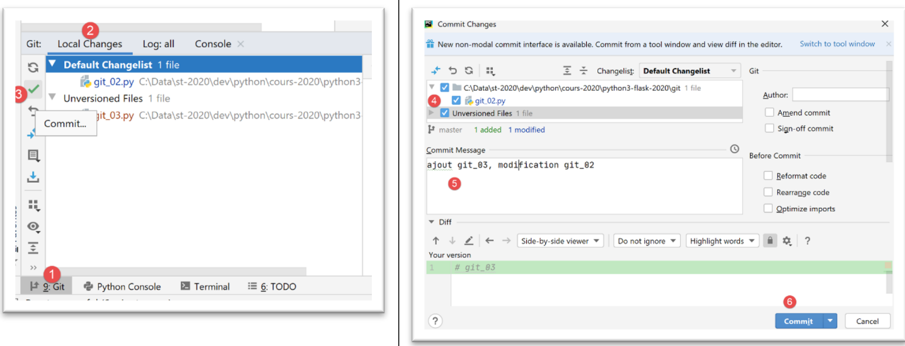
- In [1-6], the commit;
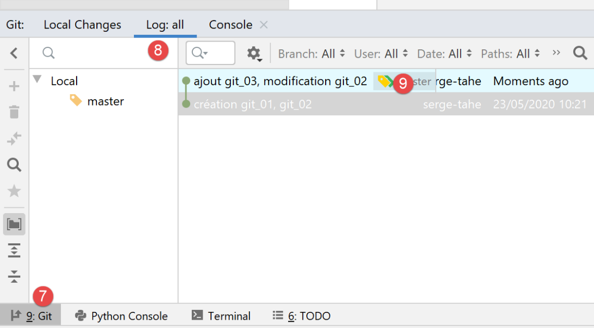
- in [9], we see the new commit;
Now, let's try to go back to commit 1 as we did before:
 |  |
- in [1-6], we revert to commit #1 in [Hard] mode;
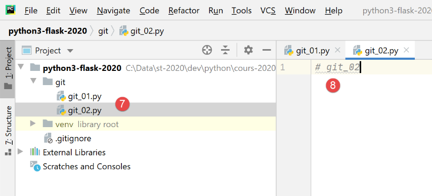
- in [7-8], this time we have indeed lost all changes made since the first commit;
From here on, we will no longer revisit [Git]. The reader can proceed as follows:
- they can follow the examples provided either by typing them out themselves or by downloading them from the course website;
- whenever an example works, they can commit their project;
- when developing their own code and hitting a dead end, they know they can return to a stable state by reverting to a previous commit;
2.3. Python Coding Conventions
You can write Python code without following coding conventions, and it will still work. But it might not be appreciated by the Python community, which has established coding conventions. These are summarized in a post at |https://stackoverflow.com/questions/159720/what-is-the-naming-convention-in-python-for-variable-and-function-names|:

- the name of a module (module_name) follows a convention sometimes called [snake_case]: all lowercase, with words separated by underscores if necessary. This [snake_case] convention applies to the names of methods, packages, variables, and functions;
- the name of a class (ClassName) follows a convention sometimes called [PascalCase]: a sequence of words joined together with the first letter of each word capitalized;
- Constant names follow the [SNAKE_CASE] convention: a sequence of capitalized words separated by underscores;
These conventions have generally been followed in this document. However, for modules defining a class, I have given the module the same name as the class it contains. It therefore follows the [PascalCase] convention instead of [snake_case]. I wanted to be able to quickly identify class modules.